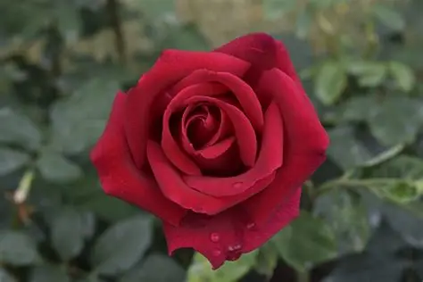
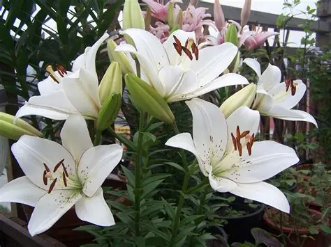
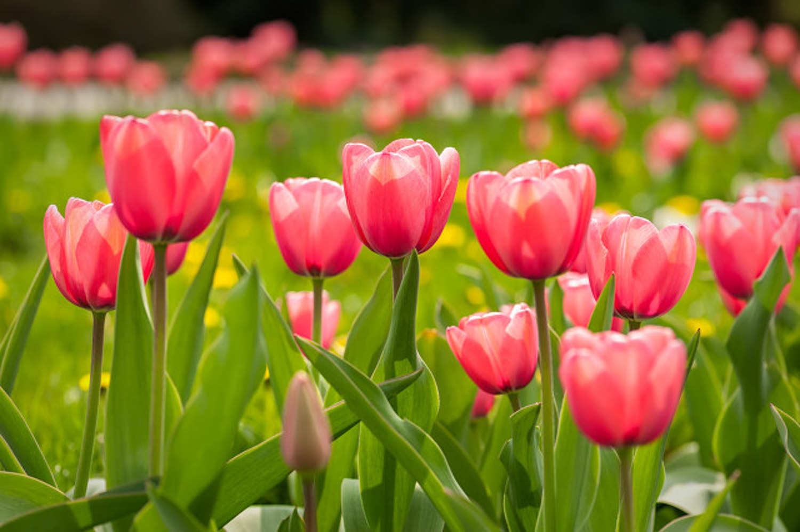
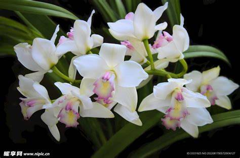

精选花卉

玫瑰 Rosa
玫瑰是爱情与美的象征，不同颜色的玫瑰有着不同的花语。红玫瑰代表热情真爱，粉玫瑰代表浪漫温柔。

百合 Lilium
百合象征纯洁、高雅与神圣，常用于婚礼和庆典。在中国文化中，百合寓意"百年好合"。

郁金香 Tulipa
郁金香是荷兰的国花，代表完美的爱情。不同颜色的郁金香有着不同的含义。

兰花 Orchidaceae
兰花被誉为"花中君子"，象征高雅、纯洁与忠贞。在中国文化中有着悠久的栽培历史。
花卉文化
花语起源
花语起源于古希腊，后在维多利亚时代盛行。人们通过赠送不同的花卉来表达情感和心意。
四季花卉
春有樱花桃花，夏有荷花茉莉，秋有菊花桂花，冬有梅花水仙。每个季节都有独特的花卉绽放。
花卉艺术
花卉在绘画、诗歌、摄影等艺术领域中一直是重要的主题，展现人与自然的和谐之美。